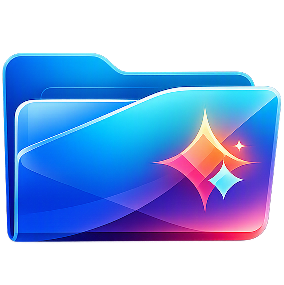

Why it helps
Spot the right folder instantly.
Instead of scanning a long list of names, you can assign meaning through color, branding, or custom image overlays.

FoldrionOpen source Windows folder customization
Foldrion helps you organize Windows folders with fast visual recognition using colors, icon packs, and image overlays.
Current version: Loading...

Why it helps
Instead of scanning a long list of names, you can assign meaning through color, branding, or custom image overlays.
Security first
Foldrion is designed as a single executable with embedded resources and no unnecessary online behavior.
Core features
Choose from more than 900 folder color variations across multiple Windows styles.
Import icon files, image files, and DLL packs, then organize them inside the app.
Overlay images on colored folders to generate combinations like branded or symbolic folders.
Export many icons as a single DLL pack for easier reuse and sharing.
Quick start
Free forever
Foldrion is MIT licensed and built for people who want control over their Windows workspace.